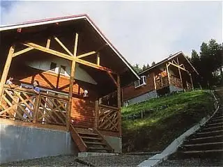

Japan / Kagoshima / Kirishima
Kirishima · Kagoshima
Kirishima
Highlighted on the Kagoshima map.

Kirishima City Hall
Sights · Things to do · Places to eat · Places to stay · Day-to-day services
Nearby in Kagoshima: ← Kinko · Makurazaki →
Other towns: Aira · Akune · Amagi · Amami · Chinacho · Higashikushira · Hioki · Ibusuki · Ichikikushikino · Isa · Isen · Izumishi · Kagoshima · Kanoya · Kikai · Kimotsuki · Kinko · Makurazaki · Minamikyushu · Minamiosumi · Minamisatsuma · Minamitane · Mishima · Nagashima · Nakatane · Nishinoomote · Osaki · Satsuma · Satsumasendai · Setouchicho · Shibushi · Soo · Tarumizu · Tatsugo · Tokunoshima · Toshima · Uken · Wadomari · Yakushima · Yamatomura · Yoron · Yusui
All towns in Kagoshima · Back to all prefectures